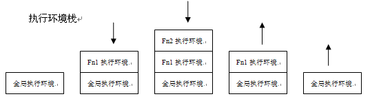
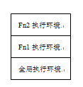

分享人：李珅颖
目录
1.背景介绍
2.知识剖析
3.常见问题
4.解决方案
5.编码实战
6.扩展思考
7.参考文献
8.更多讨论
JS中，每个执行环境都有一个与之关联的变量对象。环境中定义的所有变量和函数都保存在这个对象中。每个函数都有自己的执行环境。当执行流进入函数时，函数的环境就被推入一个栈中。在函数执行之后，栈将其环境弹出，把控制权返回到当前的执行环境。当代码在一个环境中执行时，会创建变量对象的一个作用域链（上下文），作用域链的用途是保证对执行环境有权访问的所有变量和函数有序访问。
执行环境：所有JavaScript代码都是在一个执行环境中被执行的。执行环境是一个概念，一种机制，用来完成JavaScript运行时在作用域、生存期等方面的处理，它定义了变量或函数有权访问的其他数据（包含了外部数据），决定他们各自的行为。
全局执行环境： 全局环境是最外围的一个执行环境，根据ECMAScript实现所在的宿主环境不同，表示执行环境的对象也不一样，在web中，全局执行环境被认为是window对象。
函数执行环境:每个函数都有自己的执行环境，当执行进入一个函数时，函数的执行环境就会被推入一个执行环境栈的顶部并获取执行权。当这个函数执行完毕，它的执行环境又从这个栈的顶部被删除，并把执行权并还给之前执行环境。这就是ECMAScript程序中的执行流。
变量对象：每个执行环境都有一个变量对象与之关联，执行环境中定义的所有变量及函数（只包含在当前函数内定义的函数，局部变量）都保存在这个对象中，我们编写的代码无法直接访问这个对象，但解析器在处理数据时会在后台使用它。（变量对象就是作用域为该执行环境的函数，变量的集合对象）
作用域：变量或方法有访问权限的代码空间，即变量或函数起作用的区域。
作用域链： 由当前环境栈中对应的变量对象组成。作用域的用途，是保证对执行环境有权访问的所有变量和函数的有序访问，作用域前端，始终是当前执行的代码所在的环境对应的变量对象，下一变量对象来自包含（外部）环境，而再下一变量对象则来自下一包含环境，一直延续到全局执行环境。
如何理解上面提到的几个概念？
1.执行环境与变量对象之间的对应关系:
每个执行环境会有一个变量对象与之关联，该变量对象保存了执行环境中定义的所有局部变量及函数，变量对象具有动态性，只有在定义变量的语句得到执行才会将该变量添加到变量对象中
2.程序执行时，环境栈与执行环境的关系
当执行流进入一个函数时，即该函数正在执行，函数的执行环境就会被推入一个环境栈中，所有处在执行流的执行环境将有次序地保存在环境栈中，在函数执行之后，栈将其执行环境弹出，把控制权交给原来的执行环境。所以在程序执行中，环境栈是不断变化的，伴随着执行环境的出入
3.理解环境栈，执行环境与作用域链之间的关系:
在某一时刻，环境栈中保存的执行环境是一定的
4.作用域链的作用（标识符解析机制）
作用域链的用途，是保证对执行环境有权访问的所有变量和函数的有序访问（包括外部数据）
标识符解析是沿着作用域链一级一级地搜索标识符的过程，搜索始终从作用域链的前端开始，然后逐级地向后回溯，直到找到标识符为止。
由例子中可以看出作用域链保证对执行环境有权访问的所有变量和函数的有序访问的原理：作用域链有序地保存了变量对象，由前向后，局部变量和函数往往保存在较前的变量对象中，因此被标识符解析的机会大于全局变量，也就有了局部变量会覆盖全局变量的现象，这样就保证了变量的有序访问。
5.作用域与变量对象，执行环境的关系:
由定义可知，作用域即函数或变量的作用区域。
变量或函数具有作用域的原因，就是在环境中定义的变量仅保存在了该执行环境对应的对象变量中，执行环境在环境栈中弹出之后，作用域链中找不到该对变量对象
为什么在全局环境下showColor()内定义的变量不可访问呢，这是因为当函数执行到该语句时，color变量保存在了showColor()环境对应的变量对象中，现在showColor()已经执行完毕，该执行环境也从环境栈中弹出并销毁，所以此时的作用域链也不包括showColor()的执行环境对应的变量对象了，因为标识符解析是顺着作用域链查找变量的，所以这个过程不再能搜索到color变量，所以color变得只有定义该变量的函数中才能访问，具有一定范围的作用域。
ES5只有全局作用域没和函数作用域，没有块级作用域
ES6新增了let命令用来进行变量声明，使用let命令声明的变量只在let命令所在代码块内有效
参考一：浅谈JS执行环境及作用域
参考二：js中的块级作用域
参考三：JS变量对象详解
感谢大家观看
by: 李珅颖